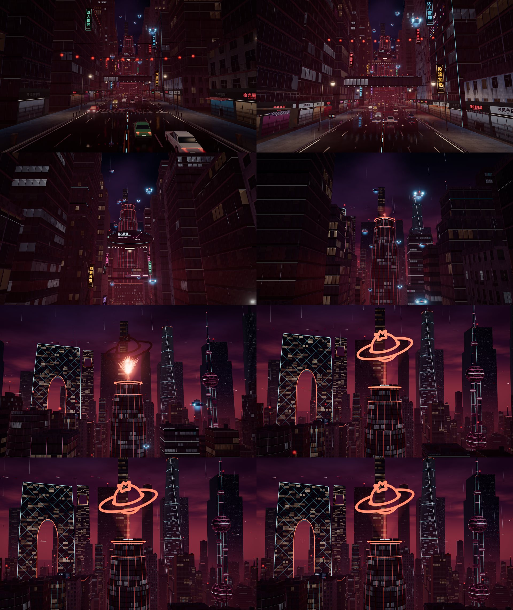
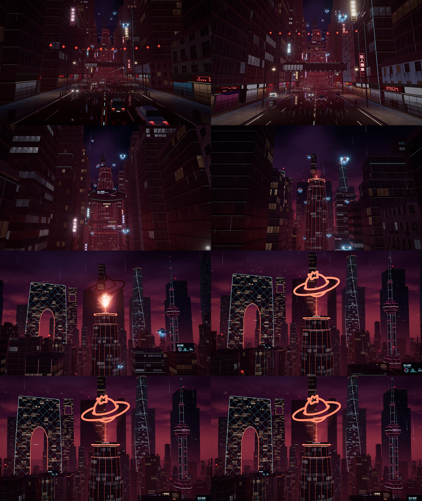
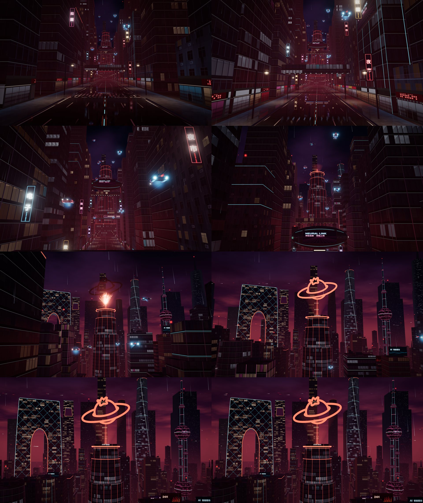
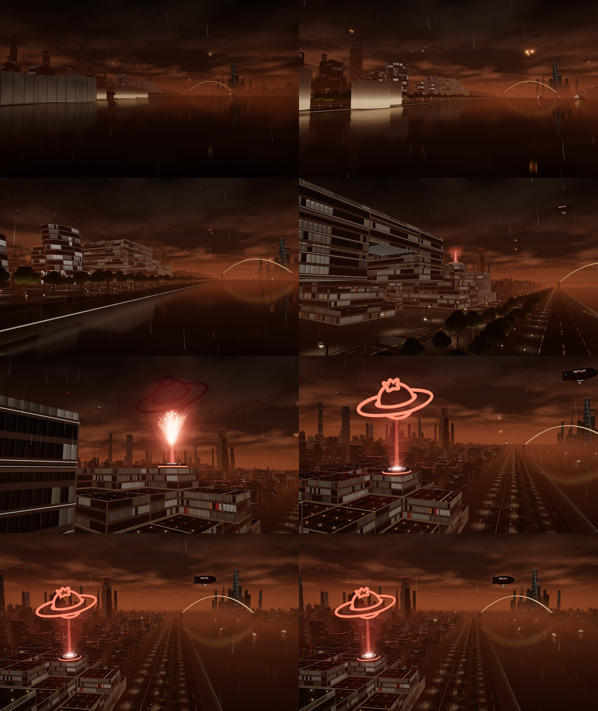
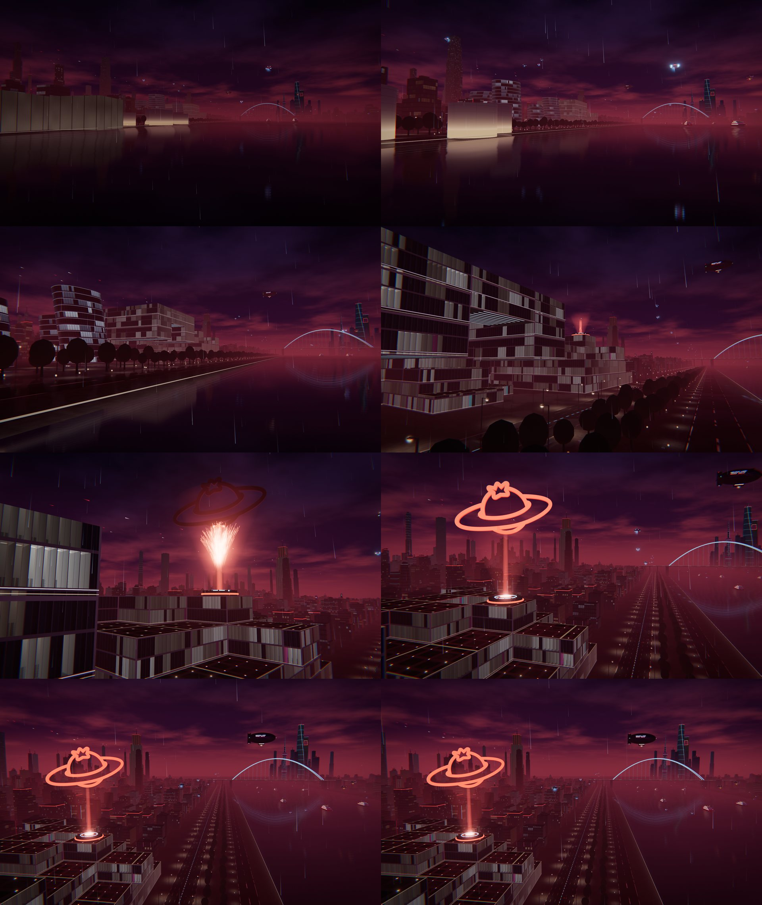
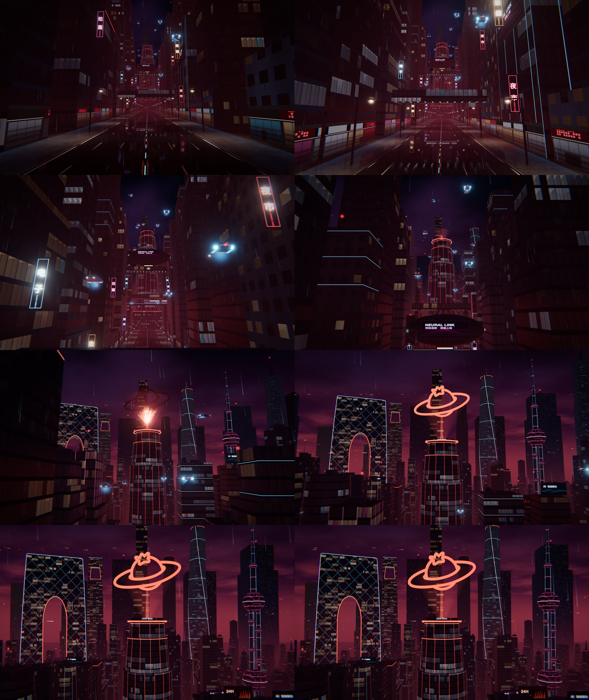
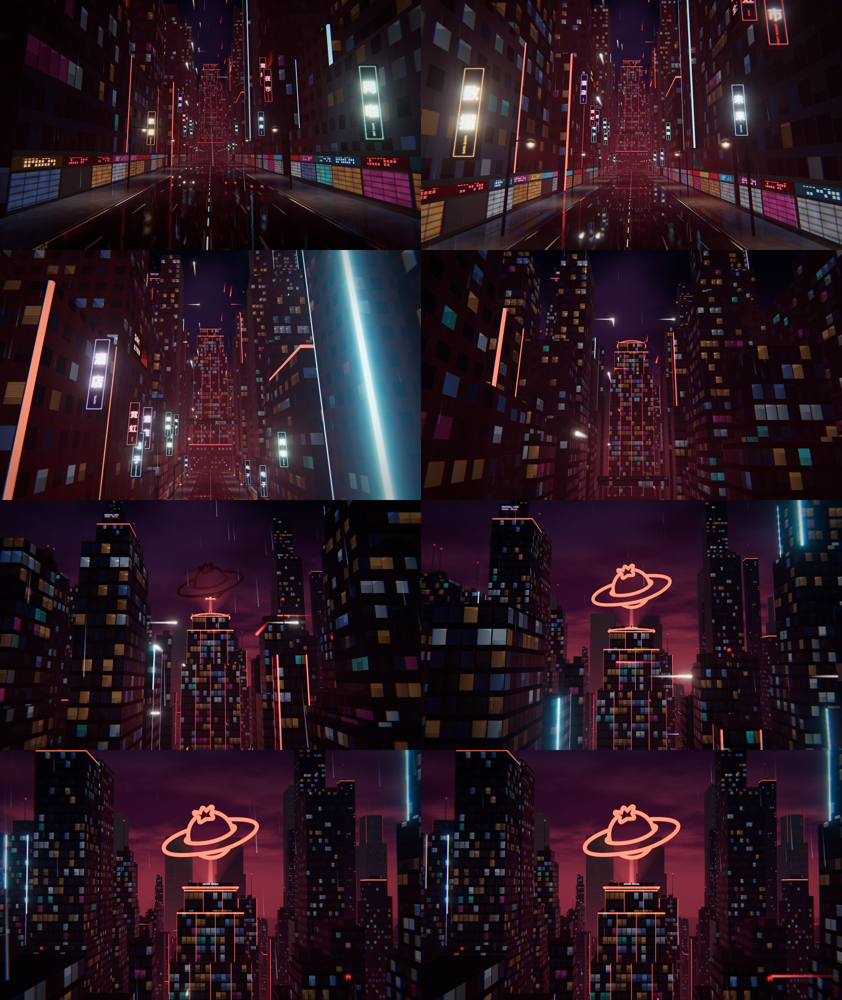
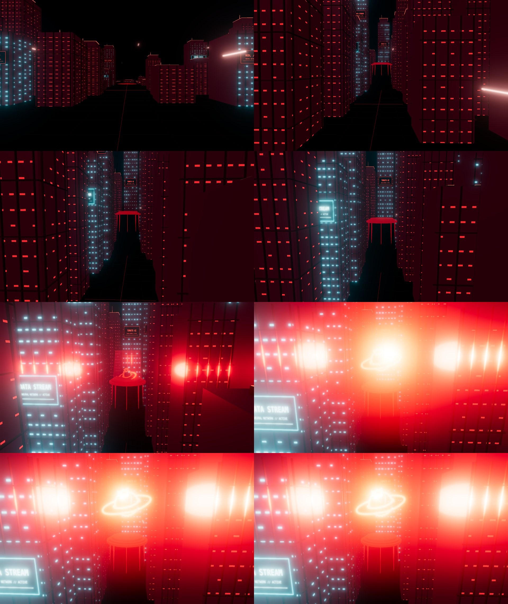

本会话中的 8 个版本，按时间排列。每张分镜依次是 0.7、1.7、2.9、3.8、4.7、5.3、6.2、7.2 秒（左到右、上到下）。点“播放”会打开一个与桌面窗口同尺寸（1280×760）的窗口；刷新重播，点击画面或按 Esc 跳到定格帧。

10 月 30 日 18:29 · 已正式引入桌面开屏（tag splash-v7），基于 v6
广告栏与画面兼容、灯光不再盖住广告文字；广告内容不重复；不加新元素，把已有元素打磨得更具体、更有质感

10 月 30 日 13:55 · 基于 v5
广告牌改为网红营销业务模块；建筑与元素细节向 GTA6 靠拢；画面过渡更流畅

10 月 30 日 13:05 · 基于 v2
基于 v2 深度细化建筑、飞行器等元素的颗粒细节




